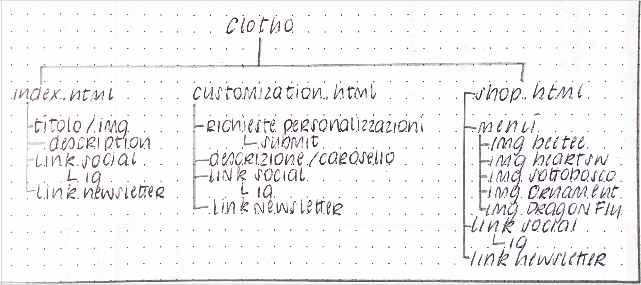
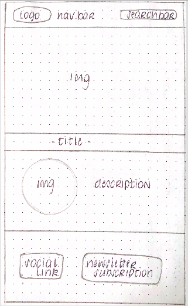
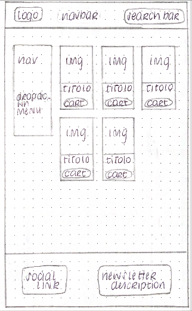
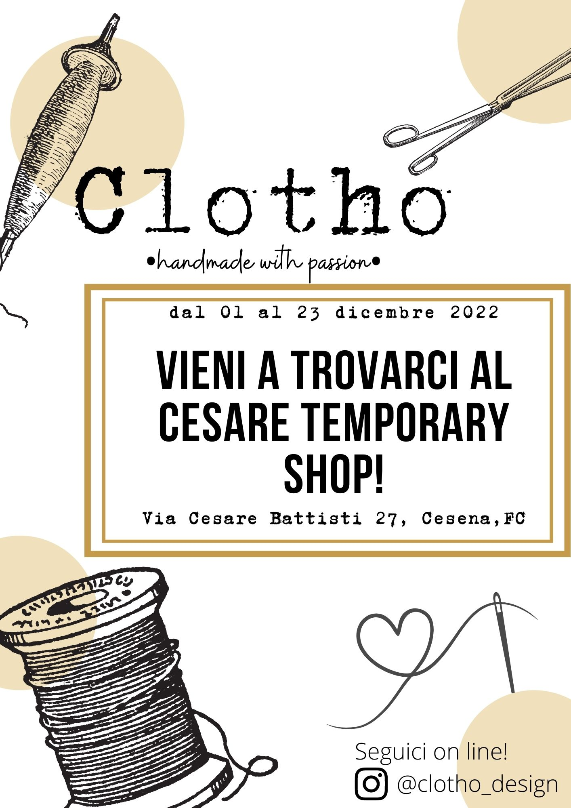

ABSTRACT:
Clotho è il sito che ho costruito come vetrina per i prodotti che realizzo con il ricamo. Nel sito ho voluto unire due funzioni che on-line ho trovato soltanto separate, cioè un e-commerce da cuii vendere direttamente i prodotti listati e ideati da me e una sezione aperta in cui i possibili clienti posssono descrivere descrivere richieste per design personalizzati o inviare un'immagine su cui basarsi per ideare un progetto.
BENCHMARKING:
obbiettivicreare uno shop funzionante legato alla pagina instagram attraverso cui vendere i miei prodotti
target utenti donne e uomini fra 20 e 40 anni, interessati a dacquistare prodotti personalizzati e handmade
competitors
siti e-commers:
http://www.embroiderystore.it/
https://embroiderindie.bigcartel.com/
https://alliembroidery.com/
pagine :
https://www.instagram.com/feli.doesthings/
https://www.instagram.com/flynn_and_mabel/
https://www.instagram.com/kry.embroidery/
https://www.instagram.com/volantsvolant/
architettura del sito:

Wireframe:


look and feel:
font:Quicksand in weight 300& 500
color: #E1D7C6 background,#1B180A text & icons, img originali
linguaggi e strumenti:Linguaggi: HTML e CSS
Supporti: bootsstrap, github, lightroom, canva, fontawsome,color name finder, google analytics, favicon, google fonts,coolors
COMUNICATION STRATEGY:
On-line sono presenti moltissime pagine di artigianato e ricamo simili alla mia che pero si dividono in due approcci alla vendita del prodotto. Alcuni creators hannocreato dei siti e-commerce a cui accedere, atraverso instagram o il web, per acquistare o si appoggiano direttamente a etzy come supporto alla vendita. Mentre altri non hanno un supporto alla vendita ma creano soltanto lavori su commissione utilizzando i dm di instagram per comunicare con i possibili clienti.
L'obbiettivo del mio sito è raggruppare le funzionalità che negli esempi che ho trovato on line sono separati su dievrse piattaforme e supporti. Quindi avere un unico sito che raggruppi shop con e-commerce e form su cui richiedere personalizzazioni senza perdere utenti nel passaggio fra pagina instagram, e-commerce o etzy.
Target audience:
L'audience a cui punta il mio sito sono donne e uomini fra i 20 e i 40 anni circa intessati ad acquistare prodotti fatti a mano e soprattutto personalizzabili con design particolari o con i propri nomi, per se stessi, la loro famigia o come regali unici. In particolare su tutti post e le descrizioni sul fatto che i prodotti dello shop sono fatti a mano e da un piccolo shop visto che l'artigianato di nicchia è in grande richiesta negli ultimi anni da questa generazione.
Promozione:Sui social la promozione del brand avviene attraverso post e reel sulla pagina e indicizzati con hashtag rilevanti [come: #embrodery #ricamatoamano #madeinitaly].
Fuori dal web si puo creare awarness sul bran partecipando a iniziative locali dove incontrare di persona potenziali clienti [ad esempio in romagna eventi come: gypsy garden, cesare temporary store]
volantino
 <>
Valutazione e risultati:
Google analytics stats: